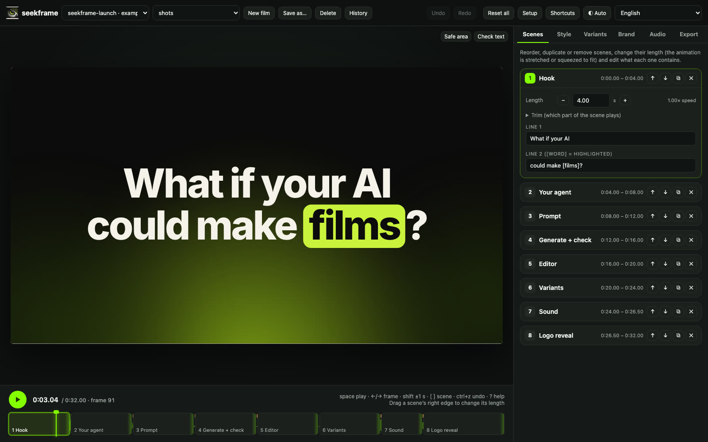

1
Give your agent a brief
Describe the audience, message, brand and formats. The film contract keeps every scene, text and colour editable.
Your agent writes the film as code. You edit it in the browser: text, colours, timing, sound, variants. Seekframe checks it and renders it to MP4.
Generated picture and sound effects, no music. Unmute for the sound design.
Every film is editable the moment your agent writes it. No timeline rebuilding, no re-prompting for a typo.

A film is a pure function of the frame number, so an agent can write it, check it, and fix it without guessing.
Describe the audience, message, brand and formats. The film contract keeps every scene, text and colour editable.
Validate, review and sync catch broken params, overflowing text, low contrast, flashing and sound that misses the picture.
Edit in the browser, then render one film or a matrix of hooks, looks, languages and sizes to MP4.
The same code renders three stories and four colourways, each with its own sound style. Your own logos and images drop in as options.
The npm packages are not published yet; for now, clone the repo.
git clone https://github.com/abdelrahmanrageh/seekframe cd seekframe npm install && npx playwright install chromium npm run editor